WEB DEVELOPMENT
WEB DEVELOPMENT
AI Website Builders vs Custom Development: Where the Shiny Tools Actually Break
AI website builders are fast, but are they right for your business? Discover where they excel, where they fail, and when custom development is the…

A trend list is the easiest article in web design to write and the easiest to get away with, because almost nobody goes back and checks. The same December 2022 list is still in circulation with the year in the title swapped and nothing underneath it changed.
So here are the twelve trends those lists called for 2022, marked. Wrong ones included. Then what actually happened while the titles were being updated: several of these stopped being trends at all and became browser features you can write in plain CSS.
Every support number below is from Can I use, checked on 30 July 2026.
Eight of the twelve held cleanly. Two held for reasons the post got wrong. One was half right. One was never a web design trend at all.
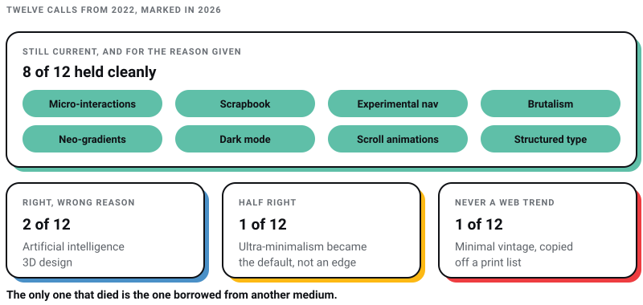
| The 2022 call | Verdict | What actually happened |
|---|---|---|
| Ultra-minimalism | Half right | Restraint became the default, so it stopped being a differentiator. Figma's own trend library now leads with vibrant palettes and maximalism. |
| Micro-interactions | Right, and the browser absorbed it | The View Transitions API is at 88.46% global support and Chrome shipped scroll-state queries in 2025. This is CSS now, not a library. |
| Scrapbook aesthetic | Right | Figma still lists it, under collage: torn textures, hand-drawn fonts, layered cutouts. |
| Experimental navigation | Right | Still on Figma's list as radial menus, hidden drawers and non-linear journeys. The example picked at the time, Kim Kneipp's portfolio, is still live. |
| Brutalism | Right, under a new name | It is filed as neo-brutalism or anti-design now. Same refusal, better craft. |
| Neo-gradients | Right | Saturated, high-contrast colour held. The specific colour references pinned to it came from a 2022 fashion season and have dated. |
| Artificial intelligence | Right, wrong reason | The 2022 call predicted faster prototypes and prettier chatbots. What happened is that AI started producing the artifact. Figma Make went generally available on 24 July 2025. |
| Minimal vintage | Wrong, and misattributed | InDesignSkills published it for 2023, not 2025, and as a print and packaging trend. It is on no current web trend list I can find. |
| Dark mode | Right, and it stopped being a trend | prefers-color-scheme is at 94.25% support and light-dark() at 86.37%. It is a baseline expectation now. The battery claim attached to it does not survive. |
| Scroll and trigger-based animations | Right, and the browser absorbed it too | animation-timeline is at 83.66% support, so scroll-linked motion no longer needs JavaScript. |
| Structured typography | Right | Bold, oversized type is still on every current list, and variable fonts made it cheap to ship. |
| 3D designs | Right, wrong tool | The 2022 call pointed at Adobe's Substance 3D Modeler, which Adobe's July 2026 Substance announcement does not mention. The real story is WebGPU, at 83.63% support. |
The errors are more useful than the hits. Knowing that scrapbook collage survived four years tells you something small. Knowing that the one item borrowed off a print and packaging list is the only one that died tells you a lot: borrowed trends do not travel, because nobody ever watched them work in the medium you work in.
The second thing worth knowing is the direction of travel. Half of these have turned into platform capability, which changes what a trend costs to adopt, and cost is the only part of a trend a client cares about.
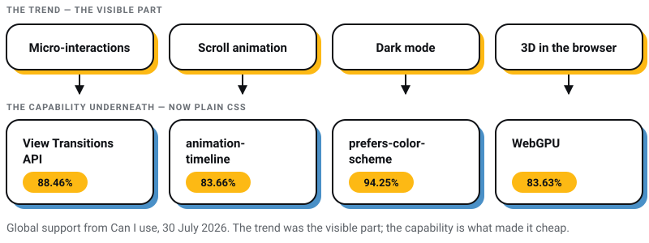
Half right. Stripping a site to its essentials did become normal. That is exactly why it stopped being a trend. When everybody's landing page is a centred headline, a sub-line and one button on white, minimalism is no longer a decision, it is the absence of one.
The mechanics behind the 2022 call still hold. A restrained palette and purposeful elements do carry a message with less friction, and they do load faster. What it got wrong is the implied payoff. Restraint is difficult precisely because there is nothing left to hide behind: with the ornament gone, spacing, rhythm and type do all the work, and any imbalance is visible from across the room. I have written separately about why white space is the hardest part of a minimal layout to get right. Minimalism is a good default and a bad differentiator, and if your competitors all look restrained it will not get you remembered.
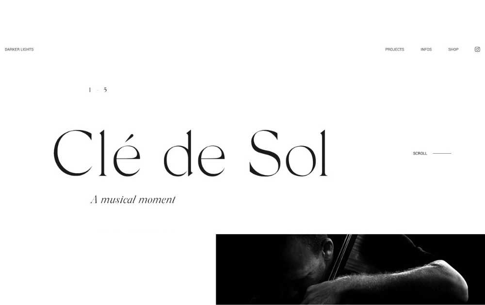
Source: Icons8
Right, and it moved into the browser. Small, low-effort feedback moments held completely, and the way you build them changed underneath.
In 2022 a page that transitioned instead of blinking meant a JavaScript animation library and the bundle size that came with it. Not any more. The View Transitions API is at 88.46% global support (Chrome 111, Safari 18, Firefox 144), and Chrome shipped scroll-state queries in version 133 plus the carousel pseudo-elements ::scroll-button() and ::scroll-marker() during 2025, per its own CSS Wrapped 2025 summary.
Source: Dribble
The best example is still the plainest one: a progress indicator on a multi-step form that moves as each step completes. It answers “how much more of this is there” before the user has to ask, and it is the cheapest thing you can add to a checkout.
Right. Torn paper edges, hand-drawn marks, vintage photography and handwritten type are still being named as a live direction. Figma files it under collage.
The appeal has not changed either. A scrapbook layout reads as made by a person, which is a useful signal at a moment when a great deal of web output looks generated. The cost is that it is hard to do at scale: every composition is bespoke, so it fights a component library. It suits brands with a story and few pages, and it is a poor fit for a catalogue.
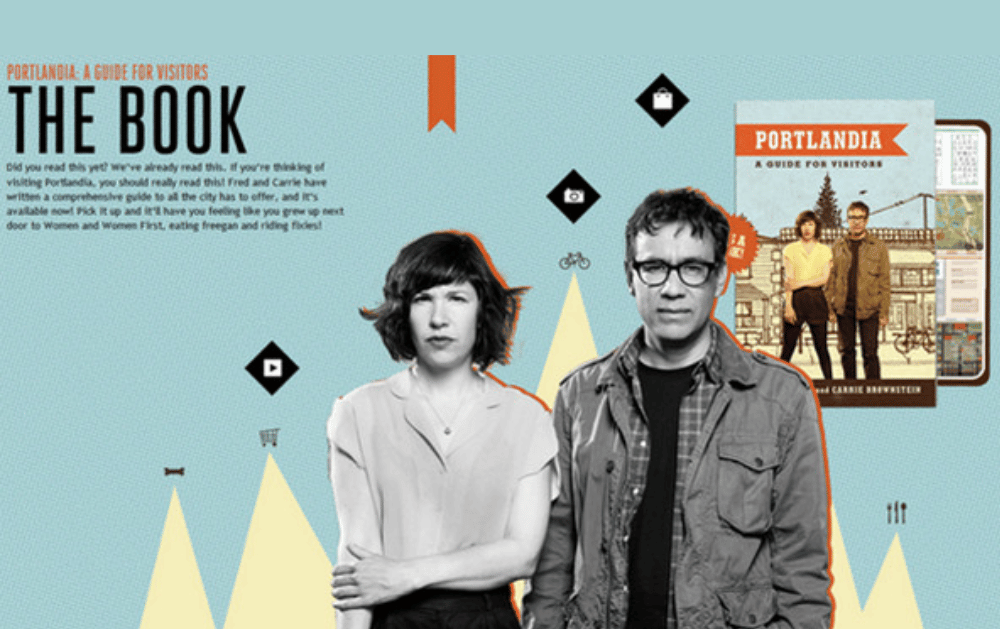
Source: designmodo.com
Right. Navigation that refuses the all-caps sans-serif bar across the top is still current, and still listed by Figma as radial menus, hidden drawers and non-linear journeys.
The example picked in 2022 was Kim Kneipp's portfolio, where the menu slides up from the bottom like a table of contents and each page is numbered to suggest a reading order. That site is still live in July 2026, which is its own small verdict.
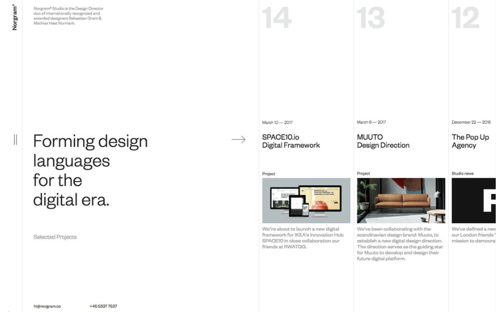
Source: designshack.net
The caveat I did not add then: this is a portfolio and campaign move. Where somebody arrives with a task, the cost of making them learn a new interaction is paid in abandoned sessions, and your analytics will report it as nothing more informative than a bounce.
Right, under a new name. The style survived and got relabelled: neo-brutalism, or anti-design. Stark type at hero scale, asymmetric grids, exposed structure, hard borders, no softening.
What changed is the craft. The 2022 version was often careless and defended as a statement. The 2026 version breaks the grid on purpose, by somebody who could have kept it, and it usually holds up on a phone.
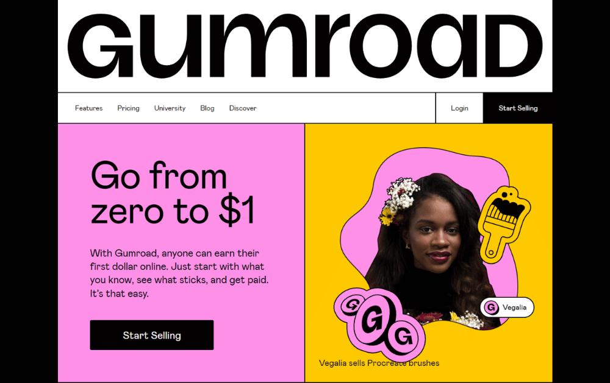
Source: miro.medium.com
I would still argue with a client who asked for it on a lead-generation site. Brutalism works when being remembered matters more than being understood on the first pass, which is true for a record label and false for a manufacturer's enquiry page.
Right. Saturated, high-contrast, gradient-heavy colour did hold, and Figma's current trend library still leads with vibrant palettes and maximalism against a decade of muted neutrals.
Two warnings. The standard version of this section opens with “according to the experts” and names no expert. It also names specific colours from a 2022 runway season, which dates a trend list more precisely than anything else on it.
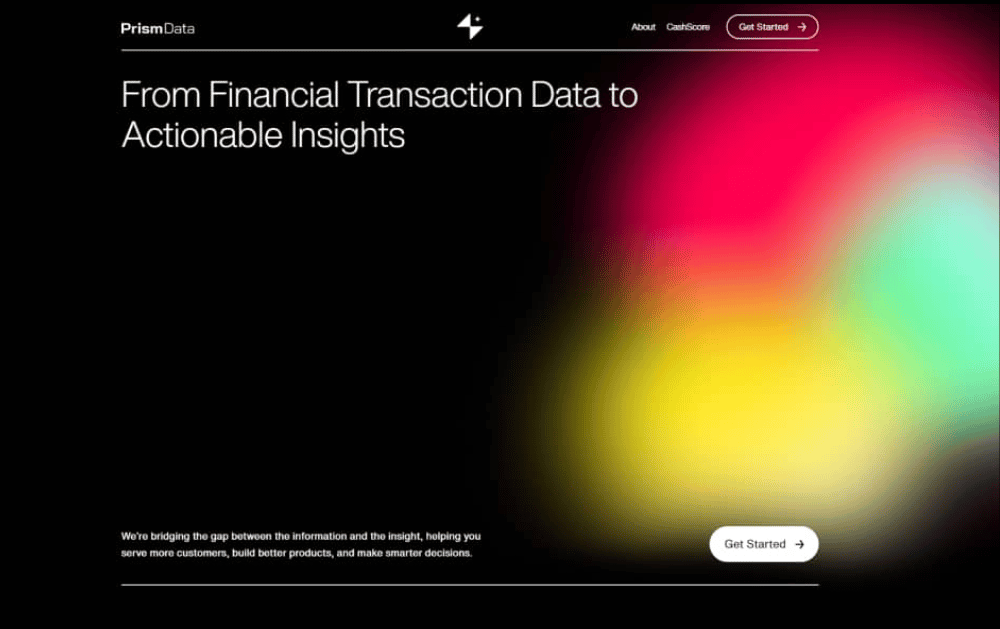
The technique survived: colour overlays on photography, gradient meshes behind type, grain over the top to stop the banding. Different sections can carry different palettes provided the type scale and spacing stay constant, and that discipline is what keeps maximalism from reading as a mistake.
Right about the trend, wrong about the shape of it. The 2022 call predicted two things: that clients would commission better-looking chatbots, and that AI would help designers assemble prototypes from a component library faster. The first was minor. The second was too small a claim.
What actually happened is that the tools started producing the artifact rather than assisting with it. Figma Make moved out of beta into general availability on 24 July 2025, turning a prompt into a working app. At Config on 24 June 2026 Figma shipped code layers with GitHub sync and a timeline-based motion tool that exports to CSS. Meanwhile a tool a lot of designers were told to learn went the other way: Adobe XD is in maintenance mode, with Adobe telling The Register on 31 January 2024 it had no plans to invest in it further.
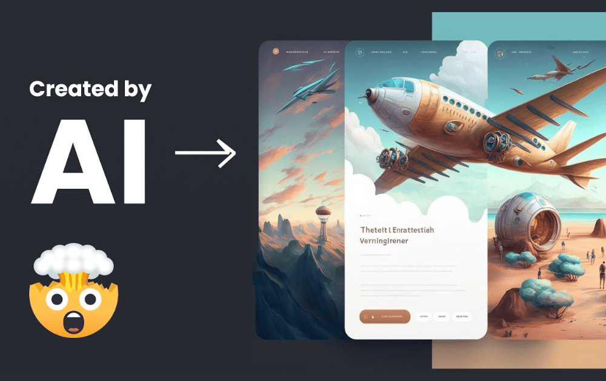
Source: Screenshot from YouTube
The honest version of the 2022 claim is this: AI did not replace designers, and it did remove the parts of the job that were assembly. I have written the longer argument, with the tools that survived and the ones that did not, in what survived the AI hype in web design.
Wrong, and the citation was wrong too. This is the one I would most like back.
The claim in circulation is that “according to InDesign Skills, there's a new trend in graphic design for 2025: minimal vintage”. InDesignSkills published minimal vintage as the first item in their ten biggest graphic design trends of 2023. Not 2025. And their examples are coffee packaging and a magazine rebrand, because it is a print and packaging trend. It appears on none of the current web design trend lists I checked, including Figma's, which names retrofuturism in roughly that slot instead.
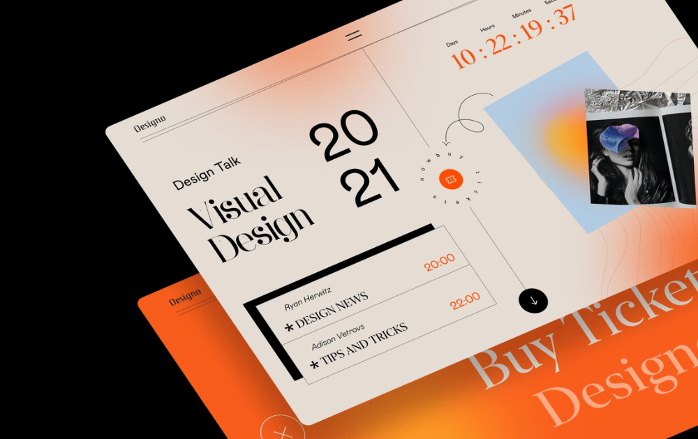
Source: Dribbble
The trend was not bad. Restrained retro type still looks good on a label. The lesson is that it reached web design lists by being copied off a print list, and a trend nobody has watched working in their own medium is a guess wearing a citation.
Right, and it graduated. Dark mode is no longer a trend in any useful sense. It is an expectation, in the same category as a layout that works on a phone.
In 2022 the HTTP Archive's Web Almanac found prefers-color-scheme on 8% of pages. Today the media query has 94.25% global support, and light-dark(), which carries both values in one declaration instead of two maintained colour blocks, is at 86.37% (Firefox 120, Chrome 123, Safari 17.5). A dark theme is now an afternoon rather than a project, provided your colours were custom properties in the first place.
Source: Dribble
One correction. Dark mode is routinely said to “help save battery life”, and the claim is left there, which is how it gets repeated. Purdue University measured it on OLED phones and published the result on 28 July 2021: at the 30% to 50% brightness most people actually use, switching to dark mode saves 3% to 9% of total phone power. At 100% brightness it saves 39% to 47%. So the battery argument is real only outdoors in the sun. Build dark mode because users asked their operating system for it, not because of the battery.
The design point still stands. A palette tuned for white looks muddy inverted, so contrast has to be rechecked in both themes rather than assumed.
Right, and this is the biggest technical change on the page.
First, an attribution worth dropping. The standard version of this section opens with “according to Huri, 2022 was all about scrolly-telling”. I cannot find who or what Huri is. That sentence, and the “in the coming year” that usually follows it, are the clearest sign a trend list has been re-dated rather than re-read.
The prediction was right and the platform went further than it. Scroll-linked motion used to mean a library listening to scroll events and writing styles every frame. CSS animation-timeline now does it natively at 83.66% global support (Chrome 115, Safari 26, Firefox 156), driven by the compositor rather than the main thread.
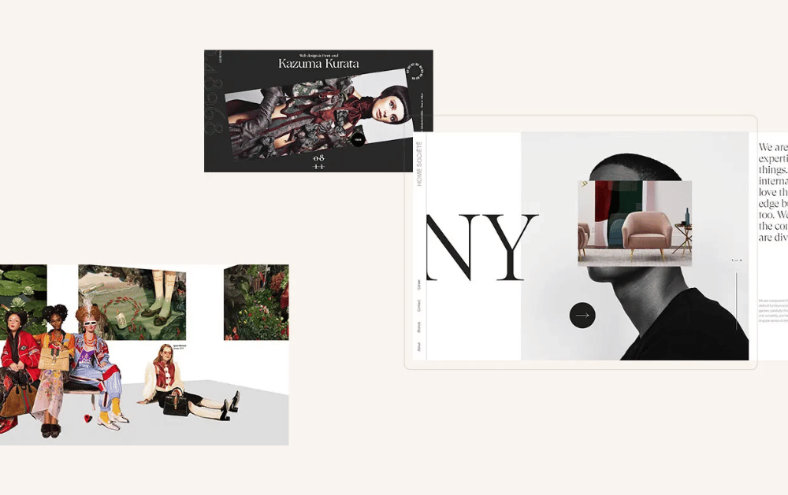
Source: qodeinteractive.com
Two additions to the 2022 advice. Wrap scroll-driven work in @supports and let the sixth of traffic without support get the static layout, which is a perfectly good page. And honour prefers-reduced-motion, which the 2022 Web Almanac found on 34% of pages. Scroll-jacking is the fastest way to make a site unusable for somebody with vestibular sensitivity.
Right. Type-led layouts held, and bold, oversized headline typography is still named on every current list.
Variable fonts made it cheap. One file carrying an axis of weights killed the old argument against big display type, that four weights cost four downloads. With fluid sizing, a headline scales from a 360-pixel phone to a desktop without four breakpoints of overrides.
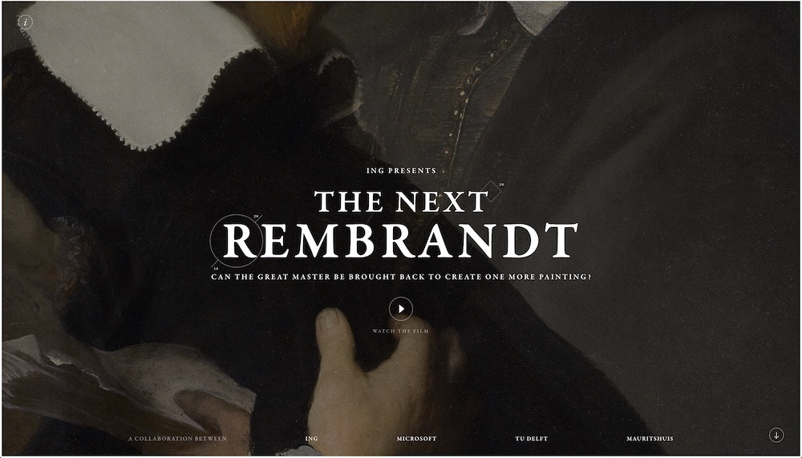
Source: designbombs
Type replacing hero imagery entirely is the strongest version of this, and the one that punishes weak copy hardest: there is no photograph left to carry a vague sentence. If the headline is not good, do not set it in 96 points.
Right about 3D, wrong about where it would come from.
These lists point readers at Adobe Substance 3D Modeler and call it Adobe's latest product. It launched in late 2022, so it has not been the latest anything for years. Adobe's most recent Substance announcement, published 21 July 2026, covers Painter 12.1, Designer 16, Sampler and the Assets library. Modeler is not mentioned.
What the post missed is that the interesting 3D moved into the browser. WebGPU is at 83.63% global support: Chrome from 113, partial in Safari 26, still off by default in Firefox. That is what makes a configurator or product viewer a reasonable thing to specify rather than an experiment.
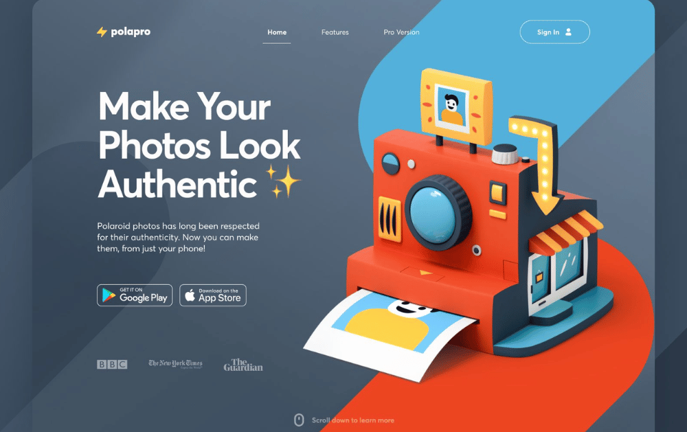
Source: Icons8
The commissioning advice still works, and Fiverr, Upwork and Dribbble are all still operating. My rule is narrower: 3D earns its weight when the product has a fit, scale or configuration question a photograph cannot answer. A 3D hero on a services site is a payload with no job.
This is the part the 2022 version could not have told you. Several of the trends above no longer need a library, a build step or a compromise. Support figures are from Can I use on 30 July 2026.
| Feature | What it replaces | Global support |
|---|---|---|
prefers-color-scheme |
JavaScript detection of the user's theme | 94.25% |
:has() |
Parent-selector workarounds in JavaScript | 92.66% |
| Container queries | Layout rules tied to viewport width instead of the component's own box | 92.60% |
| CSS nesting | A preprocessor, if nesting was the only reason you had one | 90.81% |
subgrid |
Manual alignment hacks across nested grids | 90.49% |
| View Transitions API | Page and state transition libraries | 88.46% |
light-dark() |
Two maintained colour blocks per theme | 86.37% |
animation-timeline |
Scroll-listening animation libraries | 83.66% |
| WebGPU | WebGL for anything heavy | 83.63% |
Container queries are the one I would push hardest, because they change how a component library is written rather than how a page looks. A card that reads its own width instead of the window's can go in a sidebar, a three-column grid or a full-bleed section and lay itself out correctly in each, with no variant classes. That is the practical end of the responsive argument we have been making since the responsive design guide, and it arrived while everyone was looking at AI. The wider version of that argument is in the Web Design 3.0 guide.
Four rules get repeated everywhere. Three survive. The fourth is a statistic nobody should be printing.
Responsiveness. The usual line is that there are more devices than people. I cannot source that as stated, so here is one I can: Statcounter Global Stats put mobile at 67.15% of web traffic in India in June 2026, against 32.29% for desktop. For an Indian audience the phone is the primary design target and the desktop layout is the adaptation, which is the reverse of how most agency mockups get presented. Our web design process starts on the small canvas for that reason.
Visibility. You will be told you have eight seconds to capture attention. That figure traces through a Microsoft marketing report to a site called Statistic Brain, and when Temple University's law faculty traced it properly in January 2024, one of its two supporting sources turned out to be an analytics note about 25 people leaving websites they disliked in 2008. What survives without the number: legible type, real contrast, and a page whose most important element is also its most visually dominant one.
Accessibility. Keyboard navigation, sensible heading order, alt text that describes rather than labels, contrast checked in both themes. Every trend on this page can be built accessibly. Brutalism and dark mode are the two that most often are not.
Navigation. Somebody should find what they came for without learning your interaction model. Experimental navigation is a deliberate exception, not a default.
Follow the ones that reduce friction, ignore the ones that only change the surface. Dark mode, container queries and native view transitions cost little and pay back for years. Brutalism and scrapbook collage are positioning decisions, worth it only if being memorable beats being immediately understood.
Longer than the annual lists imply. Ten of the twelve calls here are still recognisable four years on. The lists get rewritten every December because that is a publishing rhythm, not because the work changed.
For most cases, no. CSS animation-timeline covers scroll-linked motion at 83.66% support, and it runs off the main thread. Use @supports so the remainder get a static page, and respect prefers-reduced-motion regardless.
Not a trend list. A site whose colours are custom properties, so a theme is a configuration change. Whose components size themselves with container queries, so a redesign is not a rebuild. Whose motion is scroll-driven CSS that degrades to a static page. Whose typography can carry a hero with no photograph behind it.
The 2022 lists half-predicted all four and described them as aesthetics. They turned out to be infrastructure, which is usually how it goes: the trend is the visible part, and the durable part is the capability underneath that made the trend cheap.
I will score these too. If you are reading this in 2029, the calls to mark are the container query one and the WebGPU one. I would rather be wrong in public than quietly re-dated.
11 min read 22 cited sources Web Design
Author
Khurshid Alam is the founder of Pixel Street, an AI-native design & development studio. Design thinking on weekdays and spreadsheets on weekends.
He writes about growth, design, and AI, mostly because someone has to say the quiet parts out loud.
WEB DEVELOPMENT
AI website builders are fast, but are they right for your business? Discover where they excel, where they fail, and when custom development is the…
 Web Design
Web Design
A client asked me this on a call last month: “Khurshid, everyone just asks ChatGPT now. Do we even need a website anymore?” He runs a business doing…
 Branding
Branding
From small-time gigs to booming creative industries, web and graphic designers have taken centre stage. Whether you’re a rookie or a design virtuoso…


{kind=link}
{kind=link}
{kind=link}
{kind=link}
{kind=link}